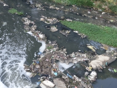

朝は昨日と違うところを散歩。
今回宿泊しているのはインディラナガーという地域で、小奇麗な民家や通学風景を見る限り落ち着いた平和な地域に思えた。
それでも基本は何もかもアバウト。学園祭の工作のノリで、あちこちの歩道橋や街路樹に適当に電線が張られていて直感的に危険を感じる。
| 川。ゴミ捨て場 | 電線が適当に歩道橋に結ばれている |
|  |
|
街中は犬が多く街の中心は牛も多く、でも猫は少なかった。
旅行しているとあまり軍事大国の印象はなかったが、町で軍の勧誘広告など目にすることはあった。
出発直前にパキスタンと緊迫した空気になっていたので気になった。
一旦ホテルに戻り、結婚式場へ。式は夜からだが、昼食会にも招待してもらった。
新郎新婦と再会して話ができた。まずはおめでとうございます。
親族が集まって初めての顔合わせのようだったが堅いものでなく、普通に新郎の隣に座らせてもらった。
伝統的なスタイルでカレーをいただく会。おいしかった。手で食べるのは初めてで、液状のものは難しい。
周りを見るとインド人たちはみんな素早くきれいに食べていてさすが。
食後は手を洗うが、そういえば食前には誰も手を洗っていなかった。
本番まで時間があるので街を歩いたり明日の計画を考えたり。
そして夜は一応着替えて再度式場へ。
民族音楽に合わせて檀上で儀式が進む。カメラマンたちが正面で撮影しているため客席からはよく見えない。
途中で新婦が退席し、1時間以上にわたる長いお色直しが始まる。
その間に新郎は写真を撮ったりしていたが、待ち時間が長いのでそのうち疲れが見え始める。
| 新郎休憩。右から2番目で客と同化 | カメラマンが邪魔で儀式が見えない |
|
|
新婦が戻り、儀式が再開される。
司会もプログラムもなく淡々と進んでおり、先の展開がわからない。
よく見ると新郎新婦も司祭らしき人から指示されながらリハーサルのように戸惑いながら作業している。
よく見えないので立ち上がって写真を撮っていたら、親族の人が檀上に誘ってくれた。
| 檀上で拝見させてもらった | 鮮やかで美しい。映画のよう |
|
|
色とりどりの民族衣装が美しい。儀式の様子を間近で拝見できて面白かった。
一応式にはジャケットと革靴を着用していたが、結局革靴も脱がされて裸足で撮影。
気付いたら他のお客さんたちは階下の食事に向かったり帰宅したりでいつの間にか人が減っていた。
始まりも終わりもわからない不思議な式だった。
二人に別れを告げて式場を出る。
今回は新婦の故郷の街での式だった、明後日は新郎の故郷で式があり、そちらは1000人招待されるらしい。
|